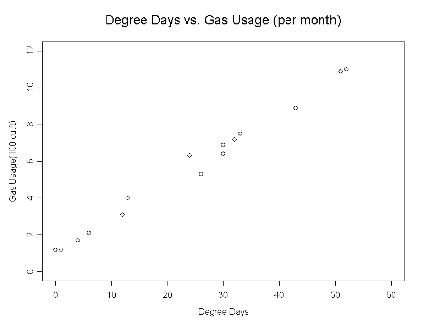
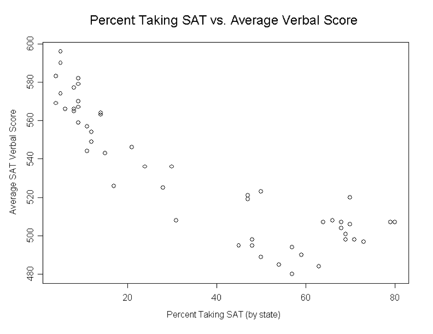

Your turn

- Work through each of the example plots
- Try variations to answer your questions
Heike Hofmann
For the exploration, we will use a different shape of the fbi data - a wide form:
library(classdata)
str(fbiwide)## 'data.frame': 2749 obs. of 14 variables:
## $ State : chr "Alabama" "Alabama" "Alabama" "Alabama" ...
## $ Abb : chr "AL" "AL" "AL" "AL" ...
## $ Year : int 1961 1962 1963 1964 1965 1966 1967 1968 1969 1970 ...
## $ Population : int 3302000 3358000 3347000 3407000 3462000 3517000 3540000 3566000 3531000 3444165 ...
## $ Violent.crime : int 5564 5283 6115 7260 6916 8098 8448 8288 8842 10185 ...
## $ Murder : int 427 316 340 316 395 384 415 421 485 404 ...
## $ Legacy.rape : int 252 218 192 397 367 341 371 396 494 637 ...
## $ Rape : int NA NA NA NA NA NA NA NA NA NA ...
## $ Robbery : int 630 754 828 992 992 1124 1167 1462 1448 1731 ...
## $ Aggravated.assault : int 4255 3995 4755 5555 5162 6249 6495 6009 6415 7413 ...
## $ Property.crime : int 32541 35829 38521 46290 48215 53740 57079 62997 66248 75214 ...
## $ Burglary : int 11205 11722 12614 15898 16398 18551 20227 22403 23559 26739 ...
## $ Larceny.theft : int 18801 21306 22874 26713 28115 30583 31682 34508 36644 40779 ...
## $ Motor.vehicle.theft: int 2535 2801 3033 3679 3702 4606 5170 6086 6045 7696 ...ggplot2 framework for plottingggplot2?ggplot2A graphical representation (plot) consists of:
aes): data variables are mapped to graphical elementsgeoms, such as points, lines, rectangles, text, …) and statistical transformations (stats, are identity, counts, bins, …)coord): normally Cartesian, but pie charts use e.g. polar coordinatesggplot2aes allows us to specify mappings; scatterplots need a mapping for x and a mapping for y:
ggplot(data = fbiwide, aes(x = Burglary, y = Murder)) +
geom_point()ggplot(data = fbiwide, aes(x = log(Burglary), y = log(Murder))) +
geom_point()ggplot(data = fbiwide, aes(x = log(Burglary),
y = log(Motor.vehicle.theft))) +
geom_point()Is the plot linear? Is the plot curved? Is there a distinct pattern in the plot? Are there multiple groups?
Does the plot follow the form very closely? Or is there a lot of variation?
Is the pattern increasing? Is the plot decreasing?
Positively: Above (below) average in one variable tends to be associated with above (below) average in another variable.
Negatively: Opposite pattern.


Can map other variables to size or colour
ggplot(aes(x = log(Burglary), y = log(Motor.vehicle.theft),
colour=State), data=fbiwide) + geom_point()
ggplot(aes(x = log(Burglary), y = log(Motor.vehicle.theft),
colour=Year), data=fbiwide) + geom_point()ggplot(aes(x = log(Burglary), y = log(Motor.vehicle.theft),
size=Population), data=fbiwide) + geom_point()other aesthetics: shape